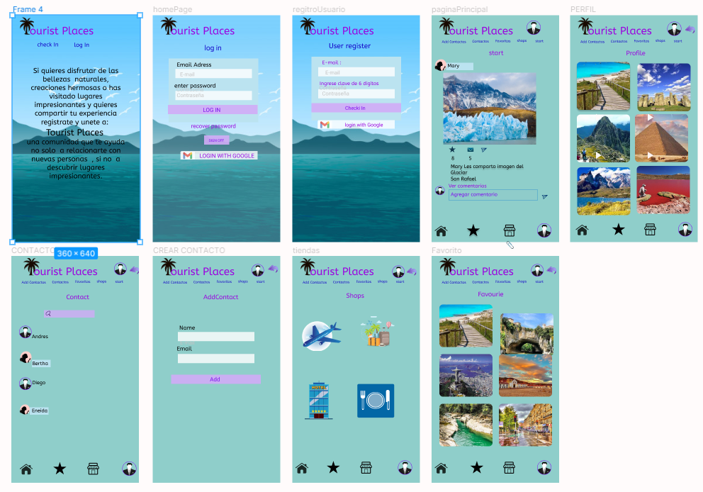

Tourist Place
TEMA DEL PROYECTO
Este proyecto es una Red Social, pensado para aquellos usuarios amantes de las bellezas naturales y sitios o lugares impresionantes.Tipo de Usuario
Va dirigido a esos usuarios amantes del turismo, , mayores de 18 años, en particular a esos usuarios que deseen ver o compartir sus experiencias turísticas, fotos, video, experiencia.Qué resuelve el producto
la mayoría de los usuarios debido a la pandemia no han podido disfrutar de esos paisajes y sitios que les encantaría conocer o que quieran volver a visitar y a través de esta red social pueden pedir opinión, ver lugares que no han visitado y también compartir su propia experiencia. Esta web le servirá como distracción, enfocar su tiempo en lo que le gusta y chatear con la comunidad.Herramientas utilizadas.
Html 5, Css, Javascript, SPA..Código.
Puedes ver el codigo en GitHub
video de Avances
Prototipo
